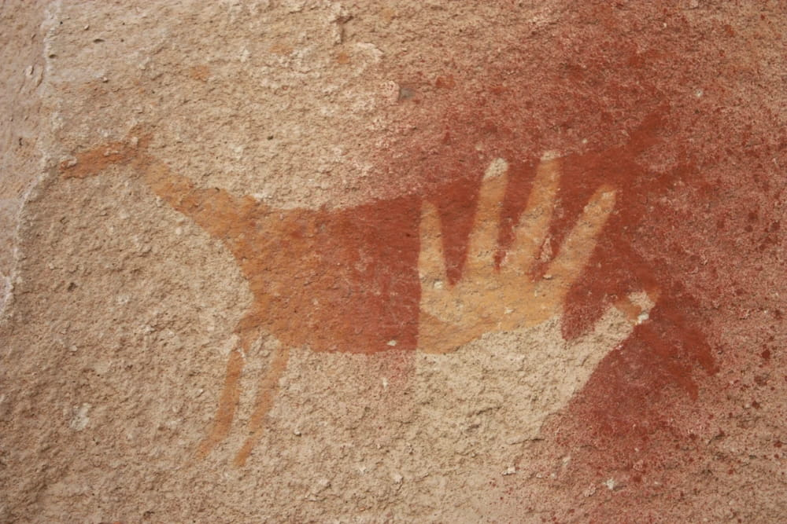

Luan Tayül
Canto Sagrado del guanaco
Canto:
Narración:
Tra, tra, tra, pinga, Tra, tra, tra, pinga,
Trayle, trayle, trayle, Mayen, mayen, mayen, mayen, mayen,
Allangellay, allangellay ngeni,
Treka, treka tupeyu kolo kolonto mapu mew,
Kasu age yem kayga, kasu age yem kayga,
Terapey, terapey, terapey.
